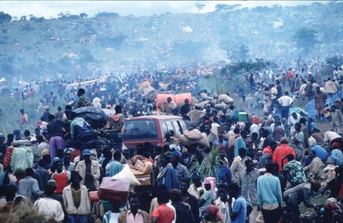

During a period of only two or three centuries—a sliver of time in the context of human history—human social life has been wrenched away from the types of social order in which people lived for thousands of years. Social change can be defined as the transformation over time of the institutions and culture of a society. Globalization has accelerated these processes of social change, affecting virtually all of humanity. As a result, far more than any generation before us, we face an uncertain future. To be sure, previous generations were at the mercy of natural disasters, plagues, and famines. And while these problems still trouble much of the world, today we must also deal with the social forces that we ourselves have unleashed.
Social theorists have tried for the past two centuries to develop a single grand theory that explains social change. Marx, for example, emphasized the importance of economic factors in shaping social life, including politics and culture. But no single-factor theory can account for the diversity of human social development from hunting and gathering and pastoral societies, to traditional civilizations, to the highly complex social systems of today. In analyzing social change, we can accomplish two tasks: We can identify major factors that have consistently influenced social change, such as the physical environment, political organization, culture, and economics; and we can develop theories that explain particular periods of change, such as modern times.
The Physical Environment
The physical environment often affects the development of human social organization. This is clearest in extreme environmental conditions, where people must organize their ways of life in relation to the weather. For example, people in polar regions develop different practices from those living in subtropical areas. Residents of Alaska, where the winters are long and cold and winter days very short, follow different patterns of social life than residents of the much warmer U.S. South. Most Alaskans spend more of their lives indoors and, except in summer months, plan outdoor activities carefully, given the inhospitable environment.
Less extreme physical conditions can also affect society. The indigenous population of Australia has remained hunters and gatherers because the continent has hardly any indigenous plants suitable for cultivation or animals suitable for pastoral production. Most of the world’s early civilizations originated in areas with rich agricultural land—for instance, in river deltas. The ease of communication across land and the availability of sea routes are also important: Societies cut off from others by mountain ranges, impassable jungles, or deserts often remain relatively unchanged over long periods.
Jared Diamond (2005) makes a strong case for the importance of environment in his book Collapse: How Societies Choose to Fail or Succeed. Diamond, a physiologist, biologist, and geographer, examines more than a dozen past and present societies, some of which collapsed (past examples include Easter Island and the Anasazi of the southwestern United States; more recent examples include Rwanda and Haiti) and some of which overcame serious challenges to succeed. Diamond identifies five factors contributing to a society’s collapse: the presence of hostile neighbors, the absence (or collapse) of trading partners for essential goods, climate change, environmental problems, and an inadequate response to environmental problems. Three of these factors involve environmental conditions. The first four factors are often outside a society’s control and need not always result in collapse. The final factor, however, is always crucial: As the subtitle of his book suggests, success or failure depends on the choices made by a society and its leaders.
The collapse of Rwanda, for example, is typically attributed to ethnic rivalries between Hutu and Tutsi, fueled by Rwanda’s colonial past. According to some explanations of the genocide that left more than 800,000 Tutsi dead after a few horrific months in 1994, much of the cause lay in the legacy of colonialism. During the first part of the twentieth century, Belgium ran Rwanda through Tutsi administrators because, according to prevailing European racial theories, the Belgians considered the Tutsi—who tended on average to be somewhat taller and lighter skinned than the Hutu and, therefore, closer in resemblance to Europeans—to be more “civilized.” This belief led to resentment and hatred, which boiled over in 1994, fueled by Hutu demagogues urging the killing of all Tutsi.
Diamond holds that this explanation is only part of the story. Through careful analysis of patterns of landholding, population, and killing, he argues that the root causes are found in overpopulation and the resulting environmental destruction. The population of Rwanda, he shows, was one of the fastest growing on earth, with disastrous consequences for the country’s land and people, who had become one of the planet’s most impoverished populations. Faced with starvation—and the absence of land to share among the growing number of (male) children—Rwanda was ripe for violence and collapse. Although ethnic rivalries may have fueled the fires of rage, Diamond also shows that in some hard-hit provinces, Hutu killed other Hutu, as young men sought to acquire scarce farmland by any means.
Some have criticized Diamond for overemphasizing the environment at the expense of other factors. By itself—except perhaps for extreme circumstances, such as the extended drought that doomed the Anasazi early in the fourteenth century—the environment does not necessarily determine how a society develops. Today especially, when humans can control much of their immediate living conditions, environment seems less important: Modern cities have sprung up in the arctic cold and the harshest deserts.
Political Organization
Another factor influencing social change is the type of political organization that operates in a society. In hunter-gatherer societies, this influence is minimal because no political authorities can mobilize the community. In other types of society, however, distinct political agents—chiefs, lords, monarchs, and governments—strongly influence the course of social development. How a people respond to a crisis can determine whether they thrive or fail, and leadership is crucial to success. A leader capable of pursuing dynamic policies and generating a mass following or radically altering preexisting modes of thought can overturn a previously established order. However, individuals can reach positions of leadership and become effective only under favorable social conditions. Mohandas Gandhi, the famous pacifist leader in India, succeeded in securing his country’s independence from Britain because World War II and other events had unsettled the existing colonial institutions in India.
Rwandan refugees try to reach the UN camp in Tanzania. According to the United Nations, approximately 800,000 Tutsi and moderate Hutu were killed during a period of 100 days in 1994. Hundreds of thousands of Rwandans fled to neighboring countries to escape the bloodshed.
Japan illustrates how effective leadership can avert possible ecological and economic collapse (Diamond, 2005). Political and military stability under the Tokugawa shoguns (military rulers from 1603 to 1867) ushered in a period of prosperity. This economic growth, however, contributed to massive deforestation of the island country. Its leaders (the celebrated samurai warriors) instituted programs of conservation and reforestation, and today—despite having one of the highest population densities of any industrial country—nearly three-quarters of Japan is covered with forests (Diamond, 2005).
Military strength played a fundamental part in the establishment of most traditional states, but the connections between level of production and military strength are indirect. A ruler may channel resources into building up the military, for example, even when this impoverishes the rest of the population—as happened in Iraq in the 1980s under the rule of Saddam Hussein and in North Korea during the 1990s under Kim Jong Il.
The most important political factor that has promoted change in the modern era is the emergence of the modern state, a vastly more efficient mechanism of government than those of premodern societies. Government plays a much bigger role in our lives, for better or worse, than it did before modern industrial societies arose.
Globalization today may be challenging national governments’ ability effectively to exert leadership. A number of theorists argue that political power is becoming increasingly uncoupled from geography (Sassen, 1996; Shaw, 2000). Sociologist William Robinson (2001, 2004, 2014), for example, claims that as economic power has become deterritorialized, so, too, has political power: Just as transnational corporations operate across borders, with few or no national allegiances, transnational political organizations are becoming stronger as national governments are becoming weaker. The World Trade Organization (WTO) has the power to punish countries that violate its principles of free trade (Conti, 2011). European countries have opened their borders to one another, established a common currency, and given up substantial political power to the European Union (EU), a regional form of governance.
Will the twenty-first century see new forms of political organization better suited to a world in which people, products, knowledge, religious beliefs, pop culture, and pollution all cross borders easily? Although it is too soon to tell, most likely, the most important forms of political organization of this century will bear little resemblance to those of the twentieth.
Culture
The third main influence on social change is culture, including communications systems, religious and other belief systems, and popular culture. Communications systems, in particular, affect the character and pace of social change. The invention of writing, for instance, allowed for effective record keeping, making possible the development of large-scale organizations. In addition, writing altered people’s perception of the relationship among past, present, and future. Societies that write keep a record of past events, through which they gain a sense of their evolution. The existence of a written constitution and laws enables a country to have a legal system based on the interpretation of legal precedents—just as written scriptures enable religious leaders to justify their beliefs by citing chapters and verses from religious texts, such as the Bible or the Qur’an.
We saw in Chapters 5, 6, 13, and 16 how the Internet and the proliferation of smartphones have transformed our personal relationships, our forms of recreation, the ways in which we learn and work, the nature of politics and social movements—in fact, almost every aspect of modern life. These changes, among the most rapid in human history, have caused what geographer David Harvey (1989) calls the “time-space compression.” And they have all occurred within a single generation.
An Egyptian girl walks next to the Muslim Fulla dolls at a kids’ shop in Cairo. Two years after she first came on the market, Fulla is now thought to be the best-selling girls’ toy in the Arab world, displacing her Western rival, Barbie.
Religion, as we have seen, may be either a conservative or an innovative force in social life. Some forms of religious belief and practice have acted as a brake on change, emphasizing traditional values and rituals. Yet, as Max Weber held, religious convictions frequently mobilize pressures for social change. For instance, many American church leaders promote attempts to reduce poverty or diminish inequalities in society. Religious leaders such as Dr. Martin Luther King Jr. were at the forefront of the American civil rights movement, and adherents of liberation theology fought for better schools, water supplies, health services, and democracy in Latin America—often at the cost of their lives.
Yet, at the same time, certain religious communities today have resisted many of the cultural aspects of globalization. Islamic fundamentalists, fundamentalist Christians, and ultra-Orthodox Jewish Haredim all reject what they regard as the corrupting influences of modern secular culture, now spreading globally through mass media and the Internet (Juergensmeyer, 1993, 2008; Juergensmeyer, Griego, and Soboslai, 2015). Islamic fundamentalists call this “Westoxification”—literally, getting drunk on the temptations of modern Western culture. While such religious communities usually embrace modern technology, which they sometimes use to disseminate their ideas, they reject what they view as the “McWorld” corruptions that go along with it.
Political scientist Samuel Huntington (1993, 1998) advanced the controversial thesis that such differences are part of seismic fault lines between entire civilizations. According to his “clash of civilizations” thesis,
The great divisions among humankind and the dominating source of conflict will be cultural. Nation states will remain the most powerful actors in world affairs, but the principal conflicts of global politics will occur between nations and groups of different civilizations. The clash of civilizations will dominate global politics. The fault lines between civilizations will be the battle lines of the future. (1993)
Huntington identified several major civilizations as having great potential for future conflict: Christianity, subdivided into Western Christianity and Eastern Orthodox; Islam; Hindu; Chinese; African; Buddhist; and Japanese. Although his thesis seems especially plausible after the events of September 11, 2001, it has been criticized as overly simplistic. Each of his so-called civilizations encompasses enormous differences in beliefs and practices, while old-fashioned geopolitical interests (for example, involving scarce resources such as oil and water) will likely shape international conflicts well into the twenty-first century. Moreover, to the extent that national policies are influenced by a belief in the clash of civilizations, Huntington’s thesis may become a self-fulfilling prophecy, as different sides square off for a cosmic war against what each believes to be the forces of unmitigated evil (Juergensmeyer, 1993).
In fact, the principal cultural clashes of the twenty-first century may not be between so-called civilizations but between those who believe that truthful understanding derives from religious faith and those who find such understanding in science, critical thinking, and secular thought (Juergensmeyer, 1993). Secular ideals, such as self-betterment, freedom, equality, and democratic participation, are largely creations of the past two or three centuries. In the United States, political debates rage between right-wing Republicans who promote teaching creationism (versus evolution) in schools and oppose abortion, and liberal Democrats whose politics are guided by scientific evidence and preservation of civil rights. Not surprisingly, creationism is much more likely to be taught in public school systems in politically conservative districts in the South than more liberal regions of the North (Kirk, 2014).
Economic Factors
Of economic influences, the farthest reaching is industrial capitalism. Capitalism differs fundamentally from previous production systems because it involves the constant expansion of production and the ever-increasing accumulation of wealth. In traditional production systems, levels of production were fairly unchanging because they were geared to customary needs. Capitalism requires the constant revision of the technology of production, a process that increasingly involves science. The rate of technological innovation fostered in modern industry is vastly greater than that in any previous type of economic order. And such technological innovation has helped create a global economy whose production lines draw on a worldwide workforce.
Economic changes help shape other changes as well. Science and technology, for example, are driven in part by economic factors. Corporations, to remain competitive, must spend large sums on research and development to commercialize scientific insights. Governments often spend far more money than individual businesses can afford in an effort to ensure that their countries don’t fall behind militarily or economically. For instance, when the Soviet Union launched the world’s first satellite, Sputnik, in 1957, the United States responded with a massive and costly space program, inspired by fear that the Russians were winning the “space race.” During the 1960 presidential campaign, John F. Kennedy heightened that fear by repeatedly accusing the Republicans of being lax on Russian missile technology, suggesting that a “missile gap” made the United States vulnerable to nuclear attack. The arms race, fueled by government contracts with corporations, has provided major economic support for scientific research and more general support for the U.S. economy.
Most recently, governments worldwide are spending vast sums to win the next technological race, whether it be information technology, biotechnology, or nanotechnology—the latest area that promises solutions to a wide range of problems that all societies confront today. Nanotechnology involves working with matter at the atomic, or “nano,” scale (a billionth of a meter), creating new materials that have novel properties: tiny particles that can enter the bloodstream and “search and destroy” particular cancer cells, replacing much more toxic chemotherapy; ultra-strong, lightweight carbon fibers, which have already found their way into golf clubs, tennis rackets, and bicycle frames, and which promise to revolutionize aircraft; data storage devices that can store a hundred times as much data as the most powerful electronics currently available; and highly efficient nanoscale filtration devices that can remove major industrial contaminants from groundwater. Countries are investing significant public funds in support of research, development, and commercialization of advanced technologies, hoping to profit while solving some of the world’s most vexing problems.
CONCEPT CHECKS
What are the most important political factors that influence social change?
Name two examples of cultural factors that may influence social change.
How does industrial capitalism affect social change?
Social Change
During a period of only two or three centuries—a sliver of time in the context of human history—human social life has been wrenched away from the types of social order in which people lived for thousands of years. Social change can be defined as the transformation over time of the institutions and culture of a society. Globalization has accelerated these processes of social change, affecting virtually all of humanity. As a result, far more than any generation before us, we face an uncertain future. To be sure, previous generations were at the mercy of natural disasters, plagues, and famines. And while these problems still trouble much of the world, today we must also deal with the social forces that we ourselves have unleashed.
Social theorists have tried for the past two centuries to develop a single grand theory that explains social change. Marx, for example, emphasized the importance of economic factors in shaping social life, including politics and culture. But no single-factor theory can account for the diversity of human social development from hunting and gathering and pastoral societies, to traditional civilizations, to the highly complex social systems of today. In analyzing social change, we can accomplish two tasks: We can identify major factors that have consistently influenced social change, such as the physical environment, political organization, culture, and economics; and we can develop theories that explain particular periods of change, such as modern times.
The Physical Environment
The physical environment often affects the development of human social organization. This is clearest in extreme environmental conditions, where people must organize their ways of life in relation to the weather. For example, people in polar regions develop different practices from those living in subtropical areas. Residents of Alaska, where the winters are long and cold and winter days very short, follow different patterns of social life than residents of the much warmer U.S. South. Most Alaskans spend more of their lives indoors and, except in summer months, plan outdoor activities carefully, given the inhospitable environment.
Less extreme physical conditions can also affect society. The indigenous population of Australia has remained hunters and gatherers because the continent has hardly any indigenous plants suitable for cultivation or animals suitable for pastoral production. Most of the world’s early civilizations originated in areas with rich agricultural land—for instance, in river deltas. The ease of communication across land and the availability of sea routes are also important: Societies cut off from others by mountain ranges, impassable jungles, or deserts often remain relatively unchanged over long periods.
Jared Diamond (2005) makes a strong case for the importance of environment in his book Collapse: How Societies Choose to Fail or Succeed. Diamond, a physiologist, biologist, and geographer, examines more than a dozen past and present societies, some of which collapsed (past examples include Easter Island and the Anasazi of the southwestern United States; more recent examples include Rwanda and Haiti) and some of which overcame serious challenges to succeed. Diamond identifies five factors contributing to a society’s collapse: the presence of hostile neighbors, the absence (or collapse) of trading partners for essential goods, climate change, environmental problems, and an inadequate response to environmental problems. Three of these factors involve environmental conditions. The first four factors are often outside a society’s control and need not always result in collapse. The final factor, however, is always crucial: As the subtitle of his book suggests, success or failure depends on the choices made by a society and its leaders.
The collapse of Rwanda, for example, is typically attributed to ethnic rivalries between Hutu and Tutsi, fueled by Rwanda’s colonial past. According to some explanations of the genocide that left more than 800,000 Tutsi dead after a few horrific months in 1994, much of the cause lay in the legacy of colonialism. During the first part of the twentieth century, Belgium ran Rwanda through Tutsi administrators because, according to prevailing European racial theories, the Belgians considered the Tutsi—who tended on average to be somewhat taller and lighter skinned than the Hutu and, therefore, closer in resemblance to Europeans—to be more “civilized.” This belief led to resentment and hatred, which boiled over in 1994, fueled by Hutu demagogues urging the killing of all Tutsi.
Diamond holds that this explanation is only part of the story. Through careful analysis of patterns of landholding, population, and killing, he argues that the root causes are found in overpopulation and the resulting environmental destruction. The population of Rwanda, he shows, was one of the fastest growing on earth, with disastrous consequences for the country’s land and people, who had become one of the planet’s most impoverished populations. Faced with starvation—and the absence of land to share among the growing number of (male) children—Rwanda was ripe for violence and collapse. Although ethnic rivalries may have fueled the fires of rage, Diamond also shows that in some hard-hit provinces, Hutu killed other Hutu, as young men sought to acquire scarce farmland by any means.
Some have criticized Diamond for overemphasizing the environment at the expense of other factors. By itself—except perhaps for extreme circumstances, such as the extended drought that doomed the Anasazi early in the fourteenth century—the environment does not necessarily determine how a society develops. Today especially, when humans can control much of their immediate living conditions, environment seems less important: Modern cities have sprung up in the arctic cold and the harshest deserts.
Political Organization
Another factor influencing social change is the type of political organization that operates in a society. In hunter-gatherer societies, this influence is minimal because no political authorities can mobilize the community. In other types of society, however, distinct political agents—chiefs, lords, monarchs, and governments—strongly influence the course of social development. How a people respond to a crisis can determine whether they thrive or fail, and leadership is crucial to success. A leader capable of pursuing dynamic policies and generating a mass following or radically altering preexisting modes of thought can overturn a previously established order. However, individuals can reach positions of leadership and become effective only under favorable social conditions. Mohandas Gandhi, the famous pacifist leader in India, succeeded in securing his country’s independence from Britain because World War II and other events had unsettled the existing colonial institutions in India.
Japan illustrates how effective leadership can avert possible ecological and economic collapse (Diamond, 2005). Political and military stability under the Tokugawa shoguns (military rulers from 1603 to 1867) ushered in a period of prosperity. This economic growth, however, contributed to massive deforestation of the island country. Its leaders (the celebrated samurai warriors) instituted programs of conservation and reforestation, and today—despite having one of the highest population densities of any industrial country—nearly three-quarters of Japan is covered with forests (Diamond, 2005).
Military strength played a fundamental part in the establishment of most traditional states, but the connections between level of production and military strength are indirect. A ruler may channel resources into building up the military, for example, even when this impoverishes the rest of the population—as happened in Iraq in the 1980s under the rule of Saddam Hussein and in North Korea during the 1990s under Kim Jong Il.
The most important political factor that has promoted change in the modern era is the emergence of the modern state, a vastly more efficient mechanism of government than those of premodern societies. Government plays a much bigger role in our lives, for better or worse, than it did before modern industrial societies arose.
Globalization today may be challenging national governments’ ability effectively to exert leadership. A number of theorists argue that political power is becoming increasingly uncoupled from geography (Sassen, 1996; Shaw, 2000). Sociologist William Robinson (2001, 2004, 2014), for example, claims that as economic power has become deterritorialized, so, too, has political power: Just as transnational corporations operate across borders, with few or no national allegiances, transnational political organizations are becoming stronger as national governments are becoming weaker. The World Trade Organization (WTO) has the power to punish countries that violate its principles of free trade (Conti, 2011). European countries have opened their borders to one another, established a common currency, and given up substantial political power to the European Union (EU), a regional form of governance.
Will the twenty-first century see new forms of political organization better suited to a world in which people, products, knowledge, religious beliefs, pop culture, and pollution all cross borders easily? Although it is too soon to tell, most likely, the most important forms of political organization of this century will bear little resemblance to those of the twentieth.
Culture
The third main influence on social change is culture, including communications systems, religious and other belief systems, and popular culture. Communications systems, in particular, affect the character and pace of social change. The invention of writing, for instance, allowed for effective record keeping, making possible the development of large-scale organizations. In addition, writing altered people’s perception of the relationship among past, present, and future. Societies that write keep a record of past events, through which they gain a sense of their evolution. The existence of a written constitution and laws enables a country to have a legal system based on the interpretation of legal precedents—just as written scriptures enable religious leaders to justify their beliefs by citing chapters and verses from religious texts, such as the Bible or the Qur’an.
We saw in Chapters 5, 6, 13, and 16 how the Internet and the proliferation of smartphones have transformed our personal relationships, our forms of recreation, the ways in which we learn and work, the nature of politics and social movements—in fact, almost every aspect of modern life. These changes, among the most rapid in human history, have caused what geographer David Harvey (1989) calls the “time-space compression.” And they have all occurred within a single generation.
Religion, as we have seen, may be either a conservative or an innovative force in social life. Some forms of religious belief and practice have acted as a brake on change, emphasizing traditional values and rituals. Yet, as Max Weber held, religious convictions frequently mobilize pressures for social change. For instance, many American church leaders promote attempts to reduce poverty or diminish inequalities in society. Religious leaders such as Dr. Martin Luther King Jr. were at the forefront of the American civil rights movement, and adherents of liberation theology fought for better schools, water supplies, health services, and democracy in Latin America—often at the cost of their lives.
Yet, at the same time, certain religious communities today have resisted many of the cultural aspects of globalization. Islamic fundamentalists, fundamentalist Christians, and ultra-Orthodox Jewish Haredim all reject what they regard as the corrupting influences of modern secular culture, now spreading globally through mass media and the Internet (Juergensmeyer, 1993, 2008; Juergensmeyer, Griego, and Soboslai, 2015). Islamic fundamentalists call this “Westoxification”—literally, getting drunk on the temptations of modern Western culture. While such religious communities usually embrace modern technology, which they sometimes use to disseminate their ideas, they reject what they view as the “McWorld” corruptions that go along with it.
Political scientist Samuel Huntington (1993, 1998) advanced the controversial thesis that such differences are part of seismic fault lines between entire civilizations. According to his “clash of civilizations” thesis,
Huntington identified several major civilizations as having great potential for future conflict: Christianity, subdivided into Western Christianity and Eastern Orthodox; Islam; Hindu; Chinese; African; Buddhist; and Japanese. Although his thesis seems especially plausible after the events of September 11, 2001, it has been criticized as overly simplistic. Each of his so-called civilizations encompasses enormous differences in beliefs and practices, while old-fashioned geopolitical interests (for example, involving scarce resources such as oil and water) will likely shape international conflicts well into the twenty-first century. Moreover, to the extent that national policies are influenced by a belief in the clash of civilizations, Huntington’s thesis may become a self-fulfilling prophecy, as different sides square off for a cosmic war against what each believes to be the forces of unmitigated evil (Juergensmeyer, 1993).
In fact, the principal cultural clashes of the twenty-first century may not be between so-called civilizations but between those who believe that truthful understanding derives from religious faith and those who find such understanding in science, critical thinking, and secular thought (Juergensmeyer, 1993). Secular ideals, such as self-betterment, freedom, equality, and democratic participation, are largely creations of the past two or three centuries. In the United States, political debates rage between right-wing Republicans who promote teaching creationism (versus evolution) in schools and oppose abortion, and liberal Democrats whose politics are guided by scientific evidence and preservation of civil rights. Not surprisingly, creationism is much more likely to be taught in public school systems in politically conservative districts in the South than more liberal regions of the North (Kirk, 2014).
Economic Factors
Of economic influences, the farthest reaching is industrial capitalism. Capitalism differs fundamentally from previous production systems because it involves the constant expansion of production and the ever-increasing accumulation of wealth. In traditional production systems, levels of production were fairly unchanging because they were geared to customary needs. Capitalism requires the constant revision of the technology of production, a process that increasingly involves science. The rate of technological innovation fostered in modern industry is vastly greater than that in any previous type of economic order. And such technological innovation has helped create a global economy whose production lines draw on a worldwide workforce.
Economic changes help shape other changes as well. Science and technology, for example, are driven in part by economic factors. Corporations, to remain competitive, must spend large sums on research and development to commercialize scientific insights. Governments often spend far more money than individual businesses can afford in an effort to ensure that their countries don’t fall behind militarily or economically. For instance, when the Soviet Union launched the world’s first satellite, Sputnik, in 1957, the United States responded with a massive and costly space program, inspired by fear that the Russians were winning the “space race.” During the 1960 presidential campaign, John F. Kennedy heightened that fear by repeatedly accusing the Republicans of being lax on Russian missile technology, suggesting that a “missile gap” made the United States vulnerable to nuclear attack. The arms race, fueled by government contracts with corporations, has provided major economic support for scientific research and more general support for the U.S. economy.
Most recently, governments worldwide are spending vast sums to win the next technological race, whether it be information technology, biotechnology, or nanotechnology—the latest area that promises solutions to a wide range of problems that all societies confront today. Nanotechnology involves working with matter at the atomic, or “nano,” scale (a billionth of a meter), creating new materials that have novel properties: tiny particles that can enter the bloodstream and “search and destroy” particular cancer cells, replacing much more toxic chemotherapy; ultra-strong, lightweight carbon fibers, which have already found their way into golf clubs, tennis rackets, and bicycle frames, and which promise to revolutionize aircraft; data storage devices that can store a hundred times as much data as the most powerful electronics currently available; and highly efficient nanoscale filtration devices that can remove major industrial contaminants from groundwater. Countries are investing significant public funds in support of research, development, and commercialization of advanced technologies, hoping to profit while solving some of the world’s most vexing problems.
CONCEPT CHECKS